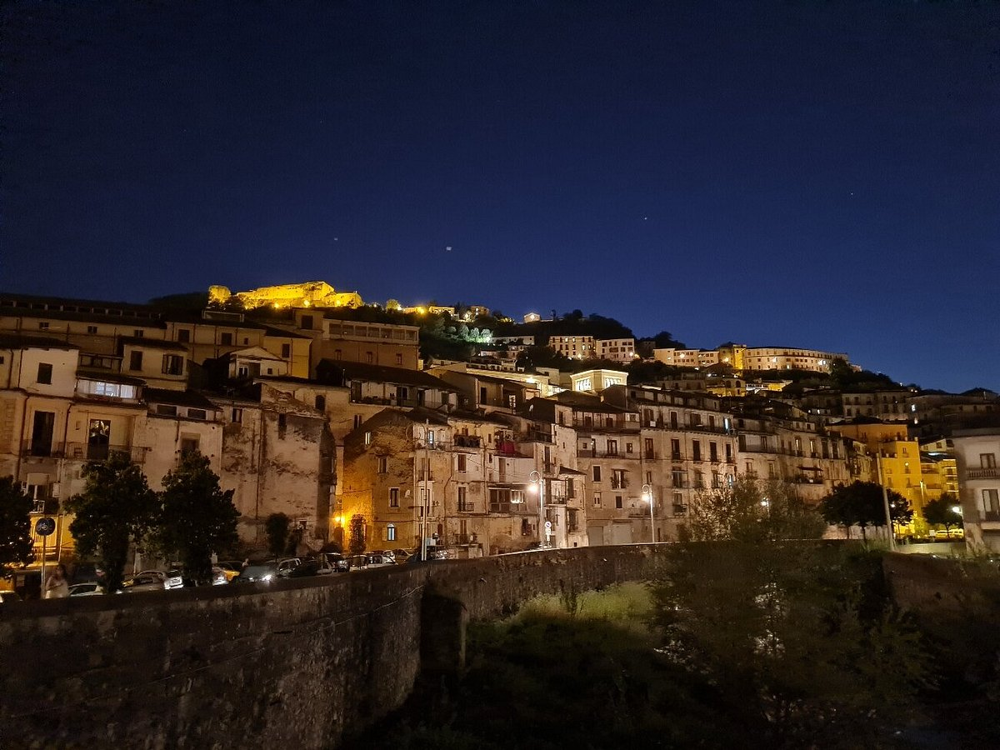

🇮🇹Italy
Coordinator
Spezzano Piccolo · Province of Cosenza · Calabria
Partner 01
Istituto Comprensivo Casali del Manco — Pietrafitta
From the village of Spezzano Piccolo in the province of Cosenza, southern Italy, the coordinator school leads project management, pedagogy and the overall co-design of the toolkit.
Spezzano Piccolo, Italy